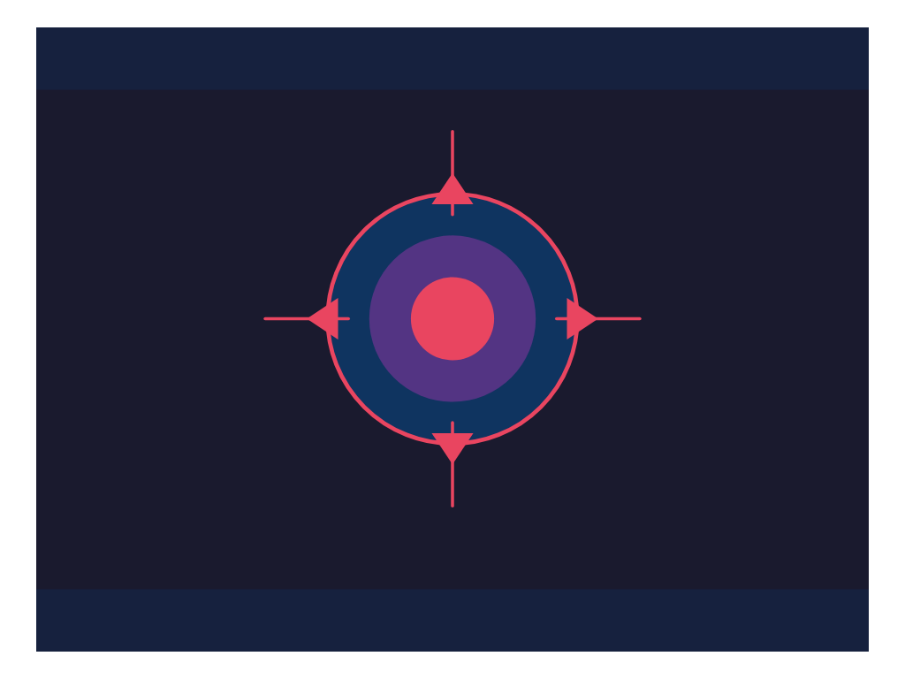

iter 0 0.00 runtime oktouched 1
intent
This iteration sets the initial structural scaffolding by defining a standardized viewBox, explicit layering order, and semantic grouping conventions for the SVG. These guardrails will prevent common rendering issues like overlapping elements or invalid XML while giving the director a clear blueprint for proportion and composition. The guidelines prioritize flat colors and simple strokes to ensure broad compatibility and a clean aesthetic. This foundational setup establishes a reliable baseline for subsequent iterations to refine anatomical accuracy and dynamic posing.
judge critique
The artifact is a geometric abstract design with concentric circles and arrows; it contains no pelican, no bicycle, and no elements related to the prompt. The coder failed to generate the requested subject matter entirely.
runtime check
artifact.svg parses as XML
commit
iter/0: view diff
33058fcf